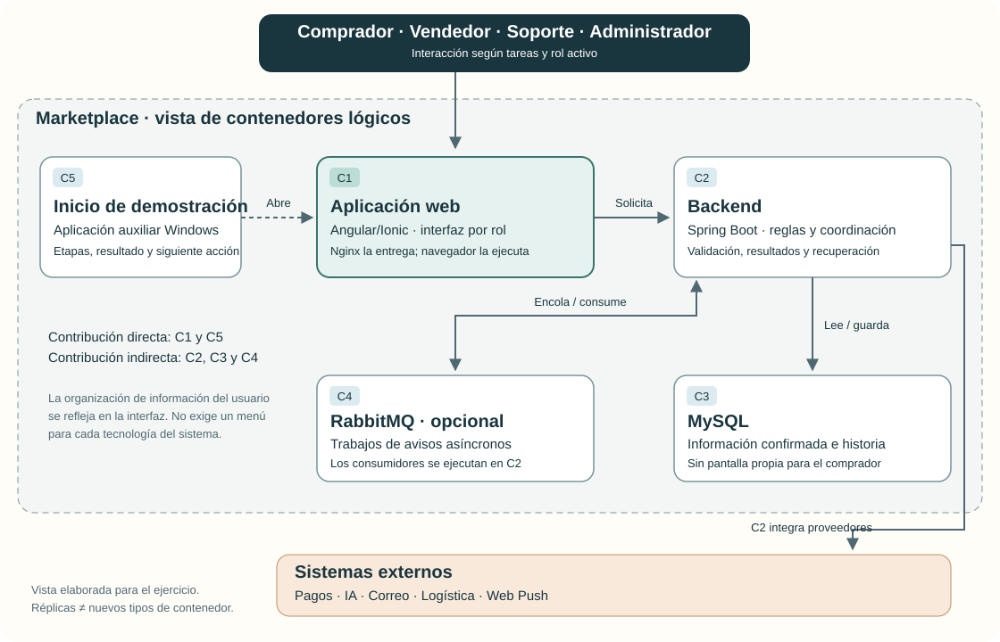

Comprador
Encontrar un producto, decidir, comprar y gestionar su entrega.
Necesita precio, disponibilidad, total, dirección elegida y siguiente paso.
01 / Un ejercicio de arquitectura de información
La usabilidad se construye desde los objetivos y el contenido hasta la navegación y la presentación. Cada contenedor C4 contribuye de manera distinta a esa experiencia.

C1–C5 identifican contenedores lógicos en este ejercicio. No son cinco pantallas, cinco microservicios ni cinco réplicas Docker. La aplicación de inicio de Windows es auxiliar.
02 / Estrategia → alcance
Encontrar un producto, decidir, comprar y gestionar su entrega.
Necesita precio, disponibilidad, total, dirección elegida y siguiente paso.
Administrar productos y atender lo que requiere acción.
Necesita inventario, pedidos, reseñas y situación de su tienda.
Revisar casos y decidir con antecedentes y consecuencias claras.
Necesitan contexto pertinente, criterio de elegibilidad, estado y motivo.
| Información | Responsable de actualizarla | Dónde se usa |
|---|---|---|
| Precio y disponibilidad | Vendedor y sistema, cuando cambia el producto | Catálogo, favoritos, ficha y resumen |
| Dirección guardada | Comprador al registrar o editar | Mi cuenta y elección durante la compra |
| Dirección histórica | Sistema al confirmar el pedido | Detalle de esa compra, aunque cambie la cuenta |
| Condición y estado de alerta | Comprador y sistema al evaluar cambios | Favoritos, alertas y notificaciones |
| Estado del pago | Sistema tras comprobar el resultado del proveedor | Resultado de compra y recuperación |
Referencia de clase: estrategia (páginas 28–30), alcance y responsables del contenido (página 32).
03 / Estructura: organizar antes de decorar
Propuesta: distinguir explorar, comprar, entrega, posventa y cuenta. La cabecera conserva búsqueda, carrito, pedidos, notificaciones y cuenta; los permisos se verifican en backend.
Catálogo → categoría → producto. Ayuda a ubicarse y volver a un nivel anterior.
Combinar categoría y precio; elegir dirección y envío. Las opciones se cruzan para resolver una tarea.
Entrega → revisión → pago → resultado. Las fases muestran avance y permiten corregir antes de confirmar.
De recomendación o notificación a producto; de pedido entregado a reseña. No todo recorrido empieza en la portada.
Referencia: páginas 34–37. El checkout tiene alternativas matriciales dentro de un avance secuencial; no se obliga a que todo el sistema utilice una sola estructura.
04 / Five Planes Framework, aplicado a C4
Selecciona un contenedor para explicar sus cinco planos. En los contenedores sin interfaz de comprador, esqueleto y superficie describen la información que habilitan en C1.
Los consumidores de notificaciones pertenecen al backend. RabbitMQ no envía por sí mismo una notificación a la pantalla del usuario.
05 / Esqueleto → superficie
Wireframes de diseño con información ficticia. La interacción de esta página ilustra el ejercicio; no guarda direcciones, no llama al backend ni procesa pagos.
Guarda una dirección y elígela al comprar.
Calle Ejemplo 12 · Bogotá
Decisión: botones y formulario antes de la lista. La elección es única; un error aparece junto al campo, con una acción para corregirlo.
Calle Ejemplo 12 · Bogotá
Seleccionarás el medio de pago en la pasarela. Al volver, el Marketplace comprobará su estado.
Decisión: «Pendiente» no significa aprobado. Una espera no debe inducir un segundo pago.
Referencia: páginas 39–43. Los controles se eligen por la decisión: opción única para dirección; texto para ubicación; acción explícita para guardar. Color y tipografía acompañan la explicación, no la sustituyen.
06 / Evidencia y sustentación
C1 organiza la tarea, C2 valida y explica, C3 conserva lo confirmado. La respuesta debe mostrar qué ocurrió y el siguiente paso. Este escenario del ejercicio no añade un número oficial al SAD.
| Dimensión de clase | Cómo se evalúa | Resultado actual |
|---|---|---|
| Aprendizaje | Primer intento sin guía: éxito, ayudas y tiempo | No medido |
| Eficiencia | Misma tarea: activaciones y duración, antes y después | No medido |
| Recordación | Repetir después de 24–48 horas sin instrucciones | No medido |
| Errores | Teléfono inválido, fallo recuperable y eliminación bloqueada | No medido con participantes |
| Satisfacción | Pregunta posterior, escala 1–5 y comentario libre | No medido |
Metas propuestas, por acordar: ≥90 % de tareas sin ayuda, hasta tres activaciones para abrir «Nueva dirección» desde el inicio autenticado y cero errores críticos. Una evaluación exploratoria con cinco compradores es descriptiva; no certifica a toda la población.
«Hicimos el ejercicio de arquitectura de información: identificamos personas y objetivos, definimos el contenido, organizamos la navegación y aterrizamos las decisiones en wireframes. Cada contenedor sostiene parte de esa experiencia. La validación con personas está pendiente y no la confundimos con cobertura de código».
Consultar el documento completo: decisiones, trazabilidad y protocolo